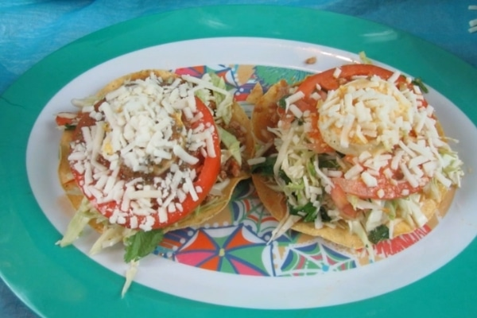

Enchiladas

Ingredients
- Corn tortilla
- 1 pound of ground beef
- 1/2 chopped onion
- 1 chopped potato
- 2 chopped tomatoes
- 2 chopped garlic
- 1/2 cup of water
- 2 tablespoons finely chopped cilantro
- 1/2 cup chopped carrot
- 1/2 pound chopped cabbage
- 2 avocados cut
- 2 boiled eggs
- 1 cup grated dry cheese
- 2 tomatoes cut
- salt and pepper as necessary
- 1 tablespoon tomato paste
- 1 cup vegetable oil
Directions
- In a frying pan, place two tablespoons of vegetable oil, and add the vegetables for one minute.
- Add the meat and fry for three minutes, add the potato, water and tomato paste, cover the pan and let it cook.
- Fry the tortillas in hot oil until golden brown, remove and place on a paper towel to remove excess oil
- Assemble the enchiladas, place two tablespoons of meat in each tortilla
- Add cabbage, tomato, sliced egg, grated cheese, add avocado and cilantro to taste.